מפת כל היעדים בכרתים
כל 11 האטרקציות, מלון הבסיס בגאורגיופוליס ושדה הרקליון מסומנים יחד בסיכות. לחצו על כל סיכה לפרטים וניווט.
📍 כל המקומות המומלצים
מציג 11 מתוך 11 יעדים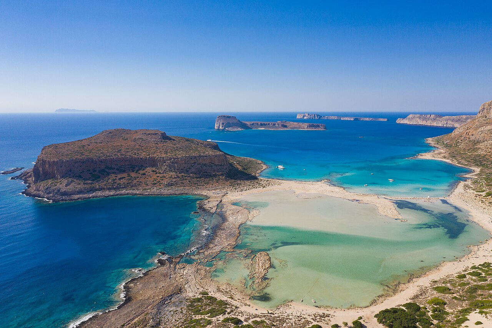
לגונת באלוס והאי גרמבוסה
Balos Lagoon & Gramvousa Island
שייט במעבורת מנמל קיסאמוס אל לגונת טורקיז מפורסמת עם מים רדודים, צלולים וחמימים, וחול לבן-ורדרד. בדרך עולים למבצר הוונציאני ההיסטורי המשקיף ממעוף הציפור על כל המפרץ. חוויה טרופית בלתי נשכחת לכל המשפחה.
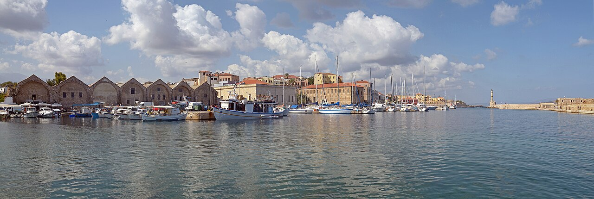
העיר העתיקה והנמל הוונציאני בחאניה
Old Venetian Harbor & Town of Chania
שיטוט בין סמטאות אבן ציוריות וצבעוניות, עמוסות בחנויות בוטיק מקומיות, סדנאות עבודת יד ומבנים היסטוריים. צועדים על שובר הגלים עד למגדלור המצרי המפורסם, וחותמים בארוחת ערב בטברנה מול מי הנמל הנוצצים.
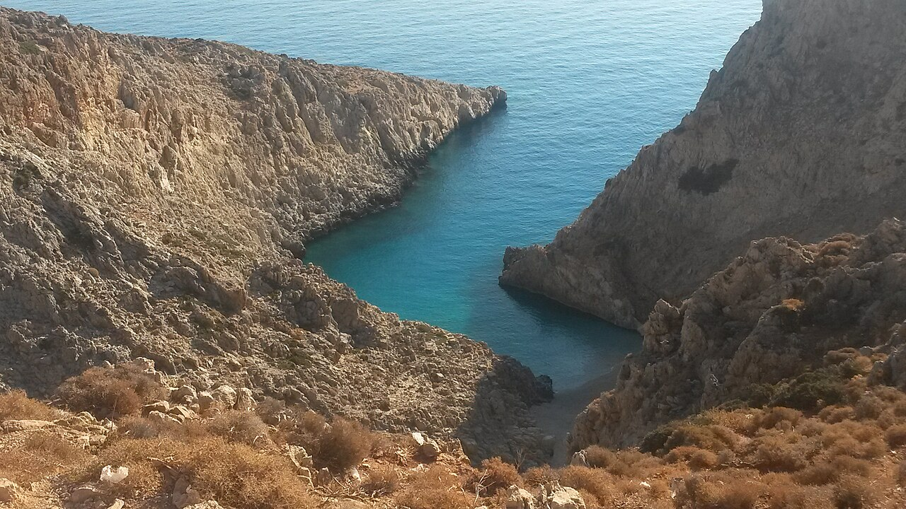
חוף סייטן לימני (זיג-זג)
Seitan Limania Beach (Stefanou)
מפרץ צר ופראי שנחרץ בין מצוקי סלע אנכיים דמויי זיג-זג, עם גוון מים טורקיז-ניאון עוצר נשימה. שוחים במים מוגנים מגלים ונהנים מתצפיות מרהיבות על אחד החופים הפוטוגניים והייחודיים ביותר ביוון.
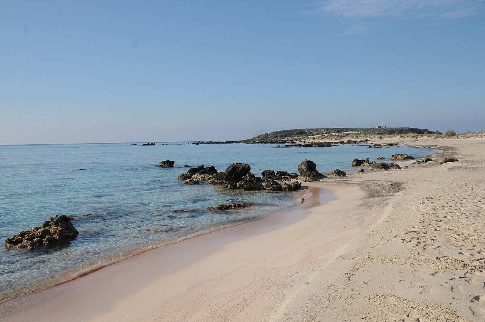
חוף אלפוניסי (החול הוורוד)
Elafonisi Beach
לגונה חלומית המפורסמת ברחבי העולם בגוון הוורוד של גרגרי החול ובמים רדודים, צלולים וחמימים שנעים ללכת בהם למרחקים. הולכים ברגל בתוך המים הרדודים אל האיון הסמוך ומוצאים פינות מבודדות ושלוליות חול מרהיבות.
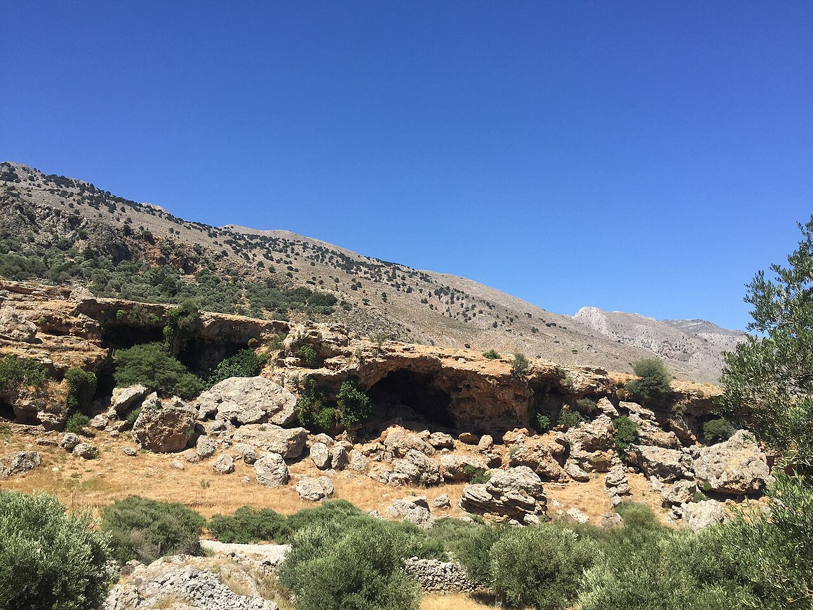
קניון אימברוס וחורה ספאקיון
Imbros Gorge & Chora Sfakion
מסלול הליכה משפחתי מוצל ונוח (8 ק"מ, כשעתיים וחצי בירידה מתונה) בתוך ערוץ דרמטי שנסגר עד לרוחב 1.6 מטרים בלבד בין צוקי ענק. בסיום המסלול יורדים לעיירת הדייגים חורה ספאקיון לטבילה בים הלובי וארוחת דגים טריים.
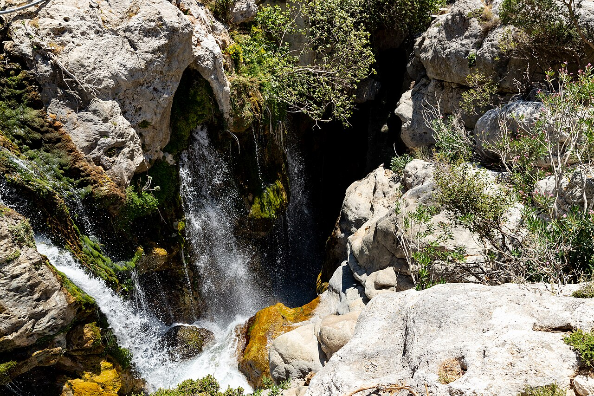
קניון קורטליוטיקו והמפל הנסתר
Kourtaliotiko Gorge & Waterfalls
ירידה בכ-250 מדרגות מהכביש אל עומק נקיק פראי שבו זורם נהר קריר. הולכים במים עם סנדלים ושוחים בבריכה טבעית צלולה עד למפל שוצף ומרשים שמגיח מתוך חלל סלעי נסתר – חוויית טבע מרעננת והרפתקנית במיוחד.
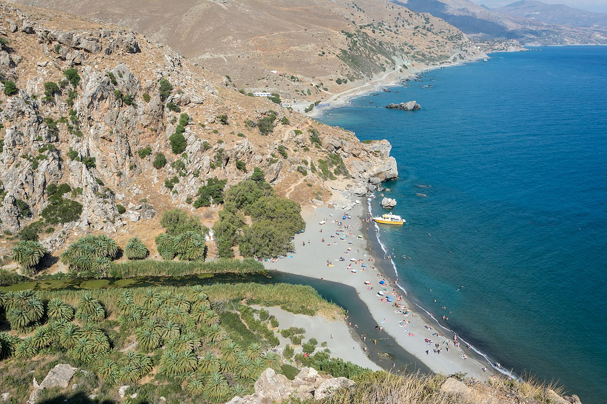
חוף ויער הדקלים פרבלי
Preveli Palm Beach & River
המקום שבו נהר קורטליוטיקו נשפך אל הים הלובי, כשהוא חוצה יער דקלים טבעי ומוצל מהיפים בים התיכון. הולכים בשבילים מוצלים לצד הנחל ומשלבים טבילה מרעננת במי הנחל המתוקים יחד עם שחייה במי הים הפתוח.
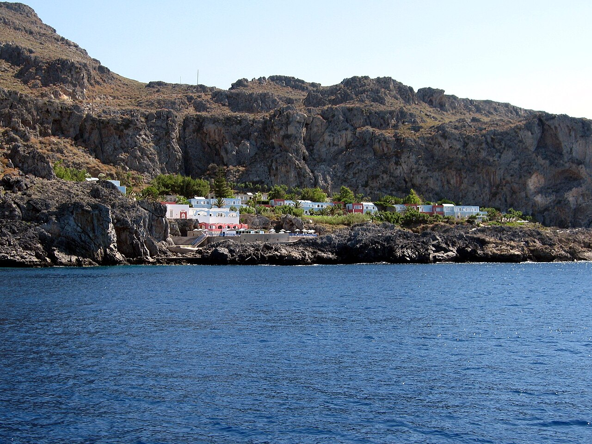
חוף קליפסו (פיורד הפיראטים)
Kalypso Beach / Pirates Fjord (Plakias)
פיורד צר ודרמטי שנחבא בין צוקי ענק זקופים, עם מי טורקיז עמוקים וצלולים הנחשבים לאתר השנירקול והצלילה הטוב ביותר באי. הירידה למים נעשית ממשטחי עץ וסולמות מובנים בין הסלעים, וגשר תלוי מעל המפרץ מספק תצפית עוצרת נשימה.
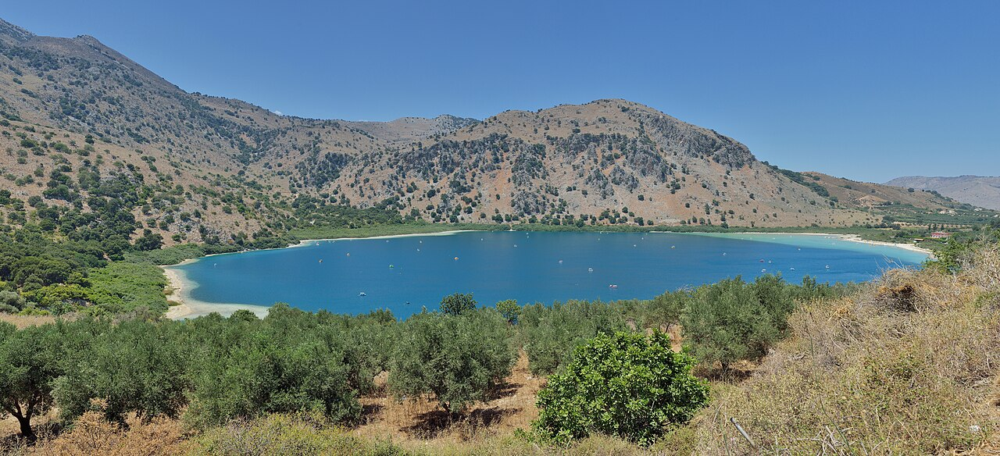
אגם קורנאס (צבי מים ופדלים)
Lake Kournas
אגם המים המתוקים היחיד בכרתים, מוקף בהרים ירוקים ומי טורקיז רוגעים. שוכרים סירת פדלים משפחתית (חלקן עם מגלשה לתוך המים), מנווטים לגדות הרחוקות כדי לצפות בצבי ביצות חמודים וברווזים, ונהנים מטבילה נעימה.
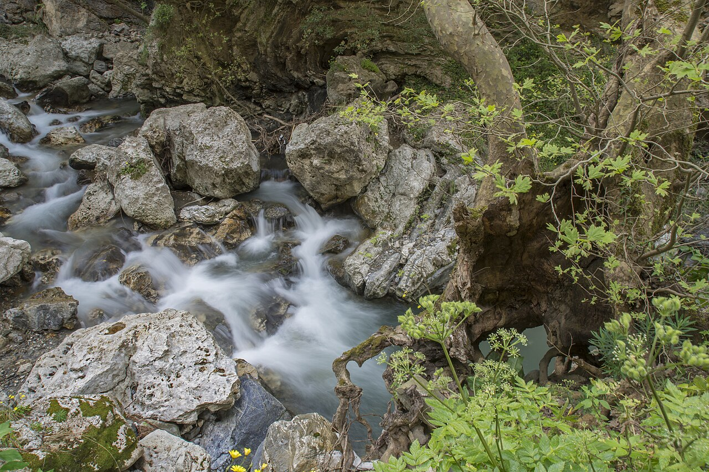
קניון פאטסוס (חבלים וסולמות)
Patsos Gorge (St. Anthony Gorge)
מסלול הרפתקני מוצל ועשיר בצמחייה שנמשך לאורך נחל זורם, עם גשרוני עץ, סולמות וחבלים מובנים שמסייעים לעבור מעל סלעים ומפלים. בתחילת המסלול ניצבת קפלת סלע ייחודית, וההליכה בו מקררת ומהנה במיוחד לילדים.
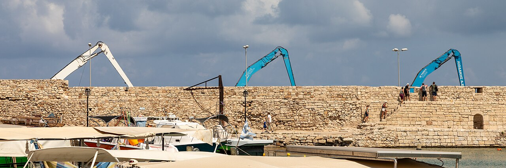
העיר העתיקה של רתימנו
Old Town & Venetian Harbor of Rethymno
עיירת נמל רומנטית המשלבת סמטאות ציוריות מרוצפות אבן, שערים ונציאניים עתיקים ומצודת פורטצה (Fortezza) החולשת על הים. מקום אידיאלי לעצירת צהריים או ערב עם גלידריות איכותיות, מאפיות מקומיות וטיילת שוקקת חיים.
🗺️ מוכנים לצאת לדרך?
כל 11 הנקודות מחוברות במפת Google Maps — פתחו ונווטו ישירות מהנייד.